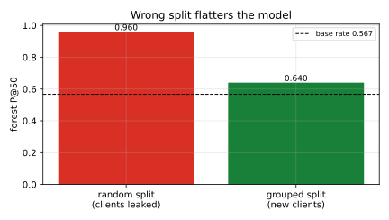
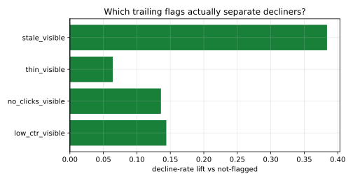

Review-first ranking of at-risk pages
A leak-aware, client-grouped study where a transparent rule matches learned models — built on the FlyRank ML Internship dataset.
Abstract
A content editor can review only a few hundred of a portfolio's already-visible pages a week, so I asked whether trailing search and engagement signals can rank next-window decline better than a transparent rule, measured at the top of the queue under client-grouped validation. Working offline on the bundled anonymized FlyRank slice (30,000 pages across 32 pseudonymized clients), I defined the label from the data's own two stacked 30-day windows — later-30 impressions below 80% of prior-30 — and used only prior-window features plus static metadata, scoring a transparent rule, logistic regression, a random forest and gradient boosting on 9 held-out clients (3,571 pages, base rate 0.567). At the top of the queue the transparent rule reached precision@50 0.76 and logistic regression tied it at 0.76, a rule-plus-model blend edged to 0.78, while the tree models did worse (0.58–0.64), and five-fold client-grouped stability put the forest at 0.788 ± 0.148 against the rule's 0.748 ± 0.126 — no model clearly won. Discrimination stayed weak overall (ROC-AUC 0.58–0.61 against 0.50 for chance), and two invalid designs inflated the numbers dramatically: a random page split that leaked 27 of 28 test clients into training lifted the forest to precision@50 0.96, and adding any single label-window column pushed ROC-AUC to 0.864–1.000. The honest conclusion is that on this snapshot the trailing signals carry little ranking power and the transparent rule is a strong default, so the capstone ships a human-reviewed four-tier queue ranked by the rule and documents the learned models as no better rather than as a win.
1 · Introduction / Problem Statement
An editor at a content agency does not have a discovery problem; the portfolio already has thousands of pages with real impressions. The problem is allocation: the review budget is a few hundred pages per week while the library holds tens of thousands. Ranking every page by raw impressions, or by "looks old", spends that budget on pages that are either already healthy or too small to matter.
The decision this analysis supports is concrete and recurring: given a fixed weekly review budget, which already-visible pages should an editor open first — and why? Getting it wrong in one direction wastes scarce human hours; getting it wrong in the other lets a page quietly decay.
This is a ranking / scoring problem, not classification. The output is not a yes/no label but a priority order that an editor works down from the top, so the metric that matters is precision at the top of the queue — not overall accuracy, which is dominated by the tens of thousands of rows an editor will never open. The research question is deliberately falsifiable: can trailing signals beat a transparent rule at the top of the queue, under a design that scores a whole client the model has never seen?
2 · Data
The study runs entirely offline on the bundled anonymized slice,
data/raw/content_refresh_anonymized.csv: 30,000 rows × 44 columns across
32 pseudonymized clients. One row is one content page. The file is a single trailing-90-day
snapshot that also stores two stacked 30-day windows: *_prev_30d (days 31–60)
and *_last_30d (days 1–30).
That stacking is what makes an honest experiment possible. The decision window is the
prior 30 days; the outcome window is the later 30 days. A page is labelled
declined_next_30d when its later-30 impressions fall below 80% of its prior-30 impressions —
exactly the slice's own trend_direction == "down" rule, so the label is auditable rather than
invented (it reproduces that rule for 100% of pool rows).
The pool is the pages this work is for: already-visible pages with at least 100 prior-window impressions. That keeps 18,010 pages across 30 clients (60.0% of the slice) with a pool base rate of 0.616. Pages below the floor are out of scope — the queue is about pages that are already being seen.
What is deliberately excluded
Every column derived from the sixty-day window that contains the label is banned from the feature
matrix, because it overlaps the outcome being predicted: trend_direction and
trend_pct (they define the label), all *_last_30d columns (the outcome window),
every *_90d total and its rates (ctr, avg_position,
engagement_rate, scroll_rate, ai_traffic_pct, coverage days), the
tiers bucketed from those totals, the production metadata columns, and the identifiers (used only for
grouping). The practical consequence is a deliberately thin feature set — and a result that is
honest about how thin it is.
3 · Methodology
Features (43 columns after encoding). Only prior-window signals and static metadata:
prior-30 impressions/clicks/sessions (raw and log), prior-30 CTR, prior-30 clicks-per-session, CTR
normalised against the page's own client, the page's share of its client's prior-window demand, keyword
context (search_volume, competition, cpc), depth
(word_count, char_count), age and freshness, presence flags, and categorical
descriptors. Missing numeric values are filled to zero and paired with presence flags, because
missingness here follows content_type rather than chance.
The transparent rule. The baseline every model must beat is a single readable
sentence: a page is worth reviewing when it is visible but under-earning clicks, and the bigger its
prior-window exposure, the higher it ranks. In code,
score = (ctr_prev ≤ 0.5 × pool_median_ctr) × log1p(impressions_prev_30d), with pool median
prior CTR 0.114. It emits feature-only reason codes (ctr_gap, no_clicks,
high_exposure) and carries no learned weight at all.
Models. Logistic regression (the interpretable default), a random forest (500 trees, leaf size 10), and histogram gradient boosting (300 iterations) — three families, one split, one metric. A rule-plus-model blend is reported as a fourth row to test complementarity.
Validation. Whole clients are held out (GroupShuffleSplit, 30% of clients,
seed 42), giving 9 unseen clients / 3,571 pages / base rate 0.567. I also run
five-fold GroupKFold for stability, and I deliberately run two invalid designs — a
random page split and a leak trap — to measure how much they inflate the score. Everything is seeded
(seed 42) and re-runs byte-for-byte.
4 · Results
4.1 The model does not beat the rule
On the nine held-out clients the transparent rule and logistic regression are effectively tied at precision@50 (0.76), a rule-plus-model blend edges to 0.78, and the tree models are clearly worse (random forest 0.64, gradient boosting 0.58) — all against a base rate of 0.567.
| method | P@10 | P@20 | P@50 | P@100 | ROC-AUC |
|---|---|---|---|---|---|
| transparent rule | 0.70 | 0.70 | 0.76 | 0.67 | 0.580 |
| logistic regression | 0.70 | 0.75 | 0.76 | 0.74 | 0.585 |
| rule + best model blend | 0.70 | 0.75 | 0.78 | 0.75 | 0.610 |
| random forest | 0.50 | 0.50 | 0.64 | 0.60 | 0.582 |
| hist gradient boosting | 0.40 | 0.55 | 0.58 | 0.59 | 0.582 |
| unranked (base rate) | — | — | 0.567 | — | 0.500 |

4.2 Stability says the same thing
Five-fold client-grouped validation gives random forest P@50 0.788 ± 0.148 and the rule 0.748 ± 0.126. The forest's point estimate is marginally higher but the fold spread overlaps completely, so the honest reading is "indistinguishable", not "the model wins".
4.3 Global discrimination is weak
Every ROC-AUC in Table 1 sits between 0.58 and 0.61 against 0.50 for chance. The rule concentrates a good handful of decliners at the very top of the queue, but it cannot separate decliners from non-decliners across the pool. That is the central honest finding: the trailing signals available in this snapshot carry little information about next-window decline, and no modelling cleverness recovers information the data does not contain.
4.4 Two invalid designs manufacture model skill

4.5 Which trailing signals actually separate decliners
The signal audit is what justifies the rule's shape. Prior-window CTR is the one clean, monotone driver: on pages with at least 500 prior impressions, the bottom-CTR third declines 72.2% of the time, the middle third 60.3%, and the top third 49.9%. Prior-window volume is not monotone (low 62.3%, middle 65.2%, high 57.3%) — exposure makes a page matter, it does not make it risky. Staleness is weak and non-monotone.

A permutation-importance check on the random forest lands in the same place from the other direction: its top inputs are page age and client-relative CTR, and its top-50 picks share only 1 page with the rule's — the forest is ranking a different set of pages, and on the held-out clients that different set is not better.
5 · Limitations and Honest Framing
- One snapshot. A single trailing-90-day slice with two stacked 30-day windows. There is no cross-month replication here, and a page with weekly seasonality can look like a "decliner" every other window pair.
- A window-comparison label. The label is a defined rule (later-30 < 80% of prior-30), so it is auditable but it is not an externally observed business outcome.
- Weak signal is the finding, not a bug. ROC-AUC ≈ 0.58 is the honest ceiling of these features on this data. I report it rather than dressing it up.
- No causal claim. Nothing here shows that refreshing a page causes recovery; that needs a controlled experiment. No claim is made about Google's ranking algorithm — the data holds observed impressions, clicks, position and engagement, and nothing more.
- Scores are rankings, not probabilities. They order a queue; they are not calibrated likelihoods.
- Pseudonymous throughout. No names, domains, URLs or queries appear or are needed.
6 · Ranked Recommendations
The deliverable is a single ranked queue of all 18,010 pool pages, each with a feature-only reason code and a four-tier action. The tiering is a review convention; the measured quality is only the held-out precision@K above.
| action | pages | what it means |
|---|---|---|
| investigate_first | 1,801 | top 10% — an editor opens these this week |
| watch_prepare | 2,709 | next 15% — queued behind the top tier |
| monitor | 3,127 | next 25% — light check, no rewrite |
| no_action | 10,373 | healthy or out of scope |

Within the review-first tier the most common reason codes are ctr_gap+no_clicks
(881 pages), ctr_gap+high_exposure (577), and ctr_gap+no_clicks+high_exposure
(191). A person then checks the page: is the low CTR a real problem or a deliberate intent; is there a
campaign or seasonality window; is the metric change genuine? Four things are explicitly never
automated: rewriting content, deleting or pruning pages, acting on a score with no review, and
treating the queue as a traffic forecast.
Monitoring. Pause and re-check if the pool decline base rate leaves the band 0.566–0.666, or if a re-run drops held-out precision@50 by more than 0.10 below the recorded value.
7 · Reproducibility
Everything is offline and seeded. The pipeline is
data/raw/content_refresh_anonymized.csv → work/notebooks/w01…w07 →
receipts in work/outputs/*.json → work/notebooks/capstone.ipynb →
this page. The paper is generated from those receipts, not hand-typed, so the figures and tables trace
back to committed numbers.
- Receipts:
work/outputs/w03_data_contract_metrics.json,w03_feature_leakage_metrics.json,w04_baseline_metrics.json,w04_signal_audit_metrics.json,w05_model_metrics.json,w06_validation_metrics.json,w07_playbook_metrics.json. - Paper-facing artifacts:
output/evaluation_summary.md,output/data_quality_summary.md,output/ranked_recommendations.md,output/capstone_results.json, andoutput/charts/*.svg(mirrored toportfolio/assets/). - Seed: 42, everywhere. The split is
GroupShuffleSplit(30%)byclient_id; stability usesGroupKFold(5). - To re-run: open
work/notebooks/capstone.ipynbin Colab (or a fresh clone) and run top to bottom; no warehouse token is needed. The offline slice that ships with the repo is the only input.
8 · Acknowledgments and Data Credit
Built on the FlyRank ML Internship dataset — flyrank.ai. Thanks to the FlyRank team for the anonymized slice, the data dictionary and the lane guide, and to the internship mentors for the framing and the review. All analysis, code, errors and limitations are my own.